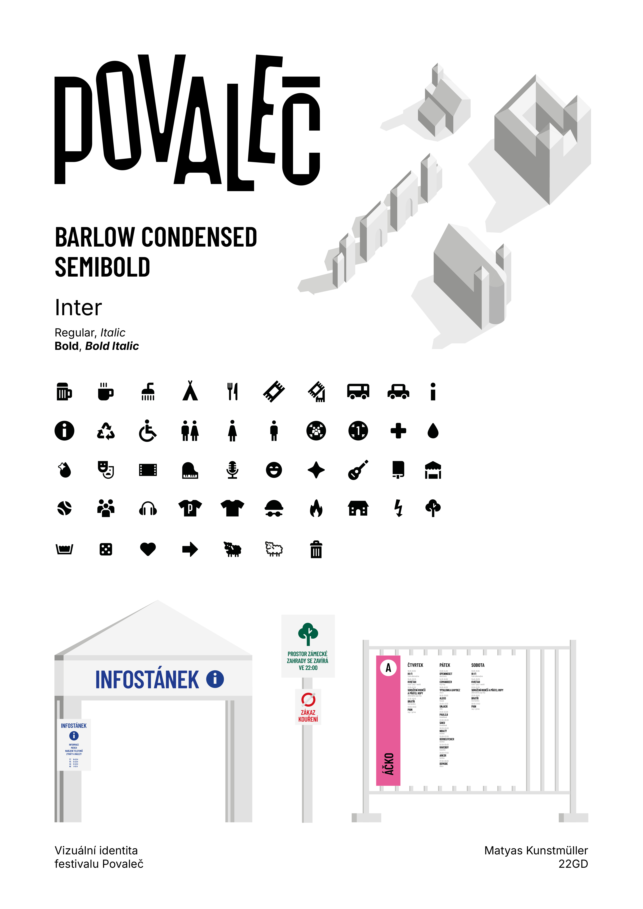
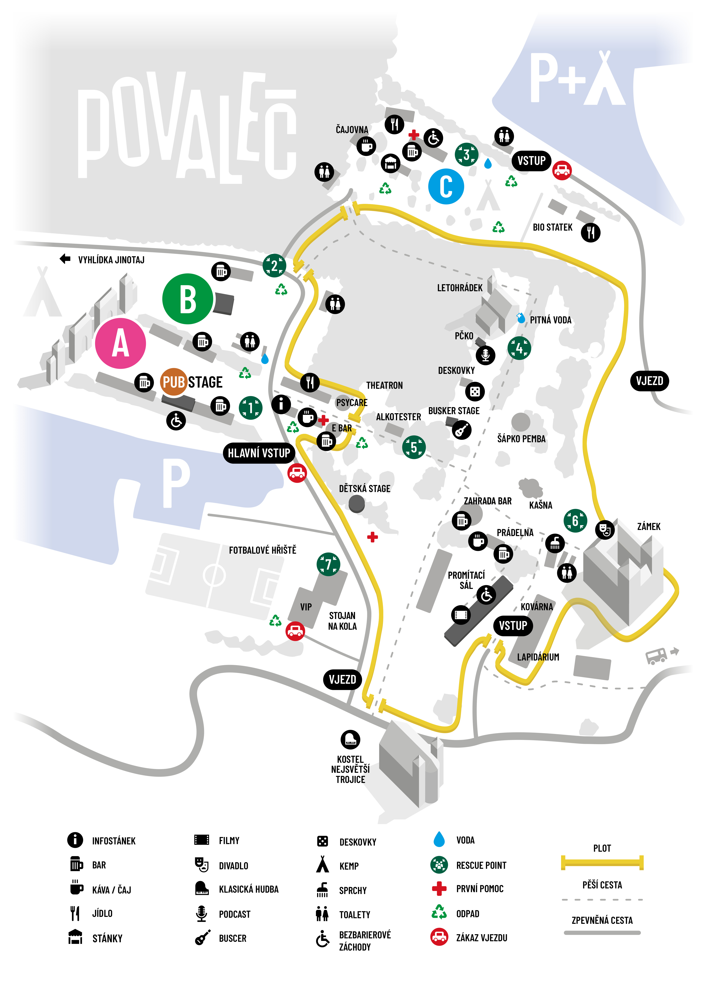
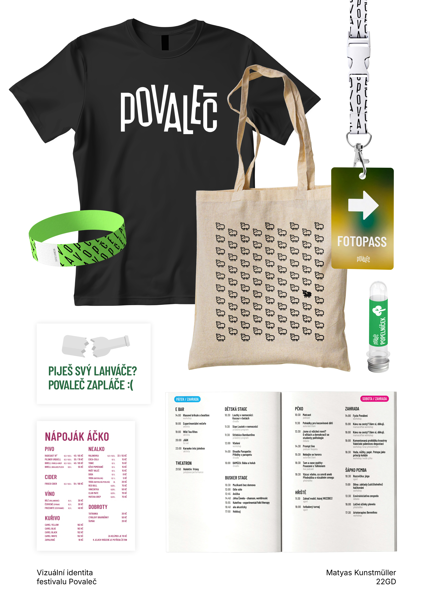
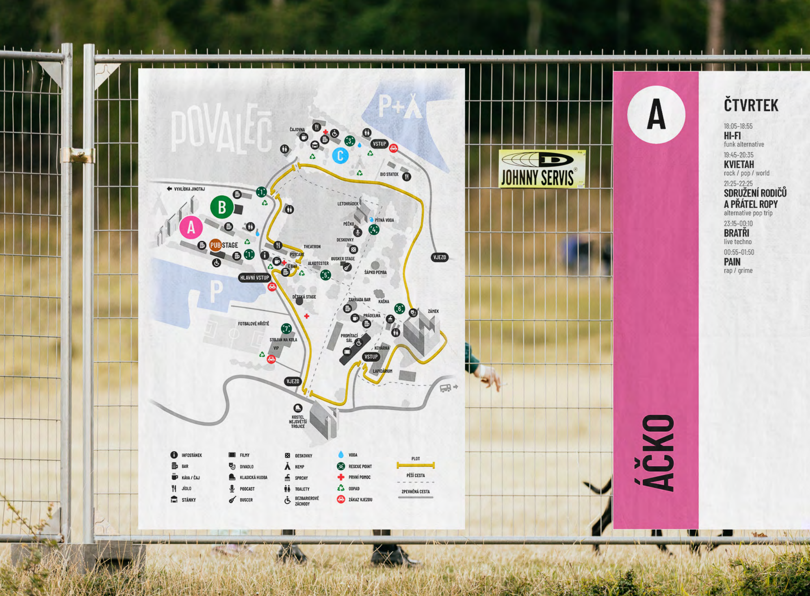
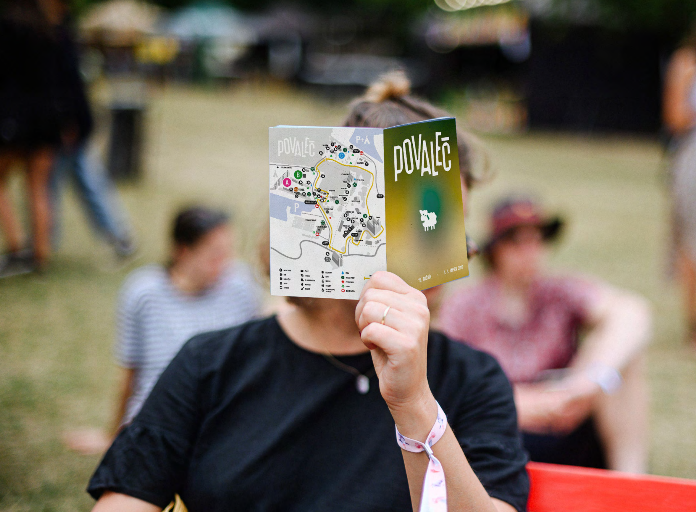
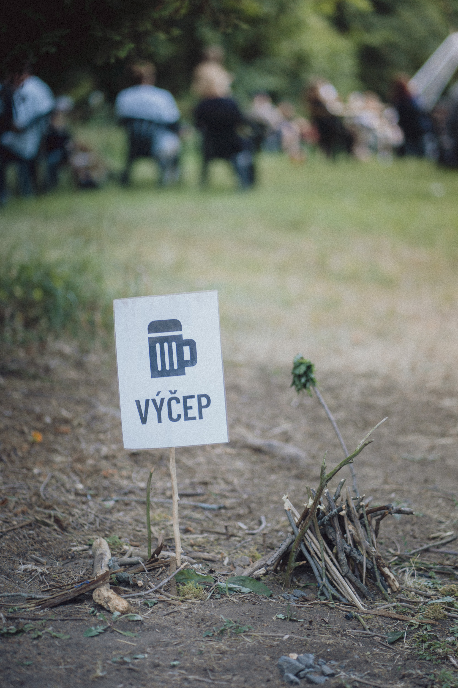
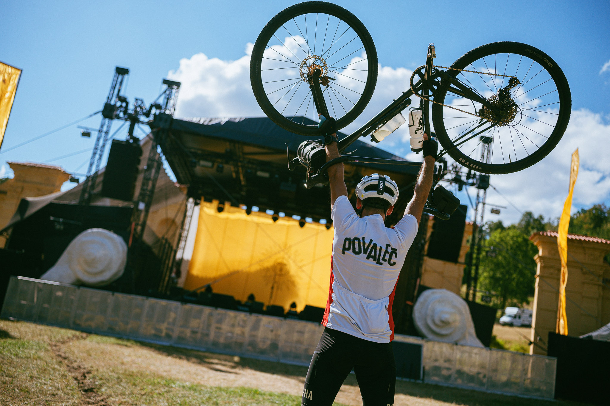

Po dlouhé spolupráci s festivalem Povaleč jsem jako svou maturitní práci vytvořil základ pro jeho nový vizuál k oslavě 20. ročníku. Cílem bylo oddělit stálou vizuální identitu (logo, typografie, piktogramy) od ročníkového vizuálu, čímž festival získal moderní a konzistentní tvář a organizační tým byl zbaven zbytečných technických starostí. (Více nahoře v obhajobě)







Povaleč 2026
Úvod
Před dvěma lety jsme se společně s Františkou Bolfovou přihlásili do opencallu na vizuál 18. ročníku festivalu Povaleč. Ačkoliv jsme tehdy o grafice tolik nevěděly, dali jsme do toho všechno (obrázek 1). Soutěž jsme sice nevyhrály, ale umístily jsme se v nejlepší čtveřici a zaujaly tým natolik, že nás oslovil pro externí grafickou spolupráci. Od té doby jsme se podílely na tvorbě příspěvků pro sociální sítě a nejrůznějších sazečských pracích. Stali jsme se součástí organizačního týmu, mnoho jsme se naučili a užili si festival z úplně jiné perspektivy. Zároveň jsme ale čím dál více vnímaly neefektivitu některých interních procesů.
Když letos z týmu odešla hlavní grafička, otevřel se mi prostor chopit se vizuálu znovu. Po dvou letech studia a s reálnou zkušeností s neduhy předchozích ročníků jsem na tento úkol nahlížel úplně jinak. Mou hlavní ambicí nebylo jen vytvořit hezký design, ale položit nový, plně funkční stavební kámen celé vizuální komunikace festivalu.
Myšlenka a koncept
Doposud festival fungoval tak, že se nejprve navrhl plakát a ostatní grafické prvky se od něj následně pouze odvozovaly. I když to občas zafungovalo, vizuál byl příliš závislý na jedné osobě, což zpomalovalo práci celého týmu. Povaleč se navíc historicky přiklání k ilustrativním vizuálům. Zvolený autor tak mohl být zaskočen obrovským množstvím sazečské a produkční práce, která nakonec ležela jen na jeho bedrech. Tento nesystémový přístup festival nezměnil od svého vstupu na sociální sítě, pouze na něj nabaloval další a další úkoly.
Právě tento zásadní problém jsem chtěl svým návrhem vyřešit. Přišel jsem s myšlenkou celý systém překopat a rozdělit vizuální komunikaci na dvě samostatné složky:
1. Vizuální identita:
Zahrnuje neměnné logo, pevně danou typografii, piktogramy a jasná pravidla pro jejich použití, která jsou shrnutá do grafického manuálu. To nejen pomáhá festivalu udržet si konzistentní tvář napříč ročníky, ale především to extrémně odlehčuje práci celému realizačnímu týmu. Můžeme tak vytvářet trvalejší prvky, například orientační systém a směrové cedule v areálu, které lze bez problému využívat opakovaně. Tento systém jde přímo naproti praktičnosti a udržitelnosti.
2. Ročníkový vizuál:
Poskytuje prostor pro zachování kreativní a neotřelé komunikace. Zde je možné experimentovat a soustředit se na ústřední motiv daného roku, aniž by autora svazovaly technické starosti, ty už totiž řeší pevná vizuální identita. Tento přístup nám umožňuje zvát ke spolupráci různé ilustrátory, kteří by si na kompletní vizuál po technické stránce netroufli. Nový motiv se pouze aplikuje do předem připravených šablon. Tímto způsobem můžeme tvořit sebevědomě a efektivně.
Inspirace a rešerše
Může to znít jako klišé, ale hlavní inspirací mi byl samotný festival. Vizuál musel odrážet jedinečný charakter Povaleče, ačkoliv jeho identita musí zůstat dostatečně čistá, aby dala vyniknout konkrétnímu ročníkovému vizuálu. Festival má za sebou dvacetiletou historii a s ní i spoustu grafických přístupů. Díky přístupu do interního archivu jsem mohl analyzovat podklady z minulých let a čerpat z toho, jak nad podobným zadáním přemýšleli tvůrci přede mnou.
Uvědomoval jsem si, že navrhuji novou tvář události, kterou mnozí návštěvníci považují za svůj letní domov. Lidé mají vůči festivalu určitá očekávání a ta musím při modernizaci brát v potaz. Vizuál se musí posunout vpřed, ale nesmí ztratit svou duši. Najít tento balanc bylo náročné, ale pro funkčnost projektu nezbytné.
Velkou inspirací mi byly i další české a slovenské festivaly. Od velkých akcí jako Rock for People a Colours of Ostrava až po ty komornější, jako jsou Inspiral Garden nebo slovenská Beseda u Bigbítu. Sledoval jsem, jakou volí míru serióznosti v komunikaci a jak uvažují nad aplikací značky. Zmínit musím také Mezinárodní filmový festival Karlovy Vary a práci Studia Najbrt (obrázek 2). Ačkoliv srovnávat Povaleč s Vary je odvážné, jejich princip „pevné logo a měnící se ročníková kampaň“ mi obrovsky pomohl při argumentaci a vysvětlování mého konceptu organizačnímu týmu.
Průběh práce
Celý proces jsem odstartoval vypracováním nabídky, ve které jsem do detailu popsal fungování nového vizuálního systému. Tím začala interní diskuze, jejímž cílem bylo sladit můj návrh s reálnými potřebami organizátorů. Zásadním krokem byl úvodní workshop, kde jsme si stanovili cíle a přesně specifikovali, co spadá do dlouhodobé identity a co do ročníkového vizuálu. Bylo pro mě klíčové zjistit preference a obavy týmu už v této rané fázi, nikoliv až po odevzdání prvních skic.
Původním plánem bylo budovat vizuální identitu souběžně s ročníkovým vizuálem. To se ale ukázalo jako nereálné. Harmonogram se začal hroutit kvůli pomalejšímu rozjezdu festivalového týmu na začátku roku, posouvání termínů i rozdílným představám o ohodnocení projektu. Z role designéra jsem musel nečekaně přesedlat do role krizového manažera a komunikátora. V jeden moment se dokonce zdálo, že celý projekt padne. I toto je však nedílná součást práce grafického designéra a díky této zkušenosti budu k řízení krizových situací s klientem v budoucnu přistupovat profesionálněji.
Nakonec jsme nalezli kompromis. Já jsem dostal na starost kompletní vizuální identitu, zatímco tvorby ročníkového vizuálu se ujala ilustrátorka z týmu. Tato situace paradoxně potvrdila funkčnost mého konceptu. Mohl jsem se naplno věnovat budování systému, do kterého se pak jiný tvůrce bez problémů zapojil. Časový skluz nás ovšem donutil upustit od ambice představit před festivalem zcela dokonalý manuál. Nyní identitu implementujeme za pochodu, což nám dává unikátní možnost provést její zátěžový test v reálném provozu. Na základě letošní zpětné vazby vznikne finální verze manuálu pro další roky.
Logo
Vývoj vizuální identity začal u loga (obrázek 3). Pracoval jsem se slovní značkou a hledal tvarosloví, které by fungovalo univerzálně. Po analýze předchozích logotypů jsem dospěl k finální značce, která je založena na jemném narušení očekávání, jež máme od klasické latinky. Písmeno „O“ tvoří ve středu dokonale ostré hrany a písmeno „E“ je záměrně zaoblené v jinak pravoúhlých rozích. Je to vizuální odkaz na neortodoxní povahu Povaleče, hudebního festivalu v klidných zámeckých zahradách. Naprostá symbióza a zároveň hravá „mimóza“.
Záměrně jsem také narušil pevnou účaří. Písmena nedokázala stát v jedné rovině, musela „skákat“ stejně jako návštěvníci pod pódiem. Výsledkem je čistý logotyp, který si zachovává hravost. Důležitým detailem je také háček nad „Č“ zredukovaný na úsečku. Tento prvek byl s festivalem spojen dlouhá léta a přišlo mi škoda ho nevyužít. Logo tak tvoří most mezi moderním systémem a historií akce.
Typografie
Po vyladění loga následoval výběr typografie. Cílem bylo najít písma, která s logem tvoří harmonický celek, jsou dostatečně neutrální a zvládnou extrémní sazečské nároky. K těm patří například festivalový program, který vyžaduje sazbu dlouhých názvů kapel do úzkých sloupců formátu A6. Z tohoto důvodu jsem pro nadpisy zvolil zúžené písmo (typ condensed). Bylo však zřejmé, že pro delší texty bude kvůli čitelnosti nezbytné neutrální bezserifové písmo.
Do rozhodování promluvil i rozpočet a nutnost pracovat s volně dostupnými fonty, aby mohly být snadno implementovány do šablon pro negrafické členy týmu. Volba padla na Barlow Condensed jako titulkové písmo a Inter pro běžnou sazbu. Tato dvojice prošla náročnými zkouškami, konkrétně od třímetrových orientačních plachet až po pětibodový text doporučení v tištěném programu. Obstála na výbornou a potvrdila své místo v nové identitě (obrázek 4).
Piktogramy
Základní sadu vizuálu uzavírá vývoj piktogramů. Zjistil jsem, že festival doposud používal pro stejné prvky odlišné ikony napříč weby, aplikací i tištěnou mapou. U piktogramů v nepřehledném festivalovém prostředí přitom nejde o estetickou ozdobu, ale o stoprocentní srozumitelnost. Rozhodl jsem se vytvořit dvě varianty: jedna striktně vycházela z geometrie nového loga, druhá modernizovala stávající značky. Po diskuzi s týmem jsme došli ke kompromisu, který spojuje vizuální příslušnost k nové identitě s maximální čitelností (obrázek 6).
Technologické zpracování
Při realizaci návrhů jsem pracoval výhradně se standardními oborovými nástroji z Adobe Creative Cloud. Tvorba loga, piktogramů a hledání ideálních layoutů probíhala v prostředí Adobe Illustrator. Pro rozsáhlejší sazečské práce, jako byl tisk kapesního programu (A6), jsem využil Adobe InDesign. Ten mi umožnil precizní práci s typografií a styly. Konkrétně jsem zde ve velké míře používal odstavcové styly které mi pomohly automatizovat celý proces a tím zásadně zkrátily dobu sázení přiděleného textu.
Výstup
Vzhledem k rozsahu festivalu a nutnosti otestovat systém v terénu nepředkládám v rámci této obhajoby definitivní grafický manuál, ale ucelenou typografickou a vizuální příručku pro seznámení se systémem.
Povinným a hlavním prezentačním výstupem mé práce jsou 2 plakáty formátu B1. Ty komplexně shrnují celou novou vizuální identitu, představuje její prvky a ukazuje možnosti její praktické aplikace.
Dále předkládám dvě nejnáročnější grafické tiskoviny, které testují vytvořený systém v praxi:
Tištěná mapa areálu – Prostor, kde se naplno uplatnila čitelnost nových piktogramů, volba barev a orientační typografie. (obrázek 7)
Kapesní program (A6) – Plnobarevná tiskovina distribuovaná návštěvníkům, jež představovala největší sazečskou výzvu.
K těmto hlavním úkolům připojuji ukázky dalšího využití v orientačním systému či jiných tiskovinách, se kterými se můžete na festivalu setkat.
Závěr
Tento úkol otestoval znalosti, které jsem sbíral celé čtyři roky, a ukázal mi, že jsem schopen se postavit takto komplexní výzvě. Ač se mám stále hodně co učit. Nyní má festival prostředky fungovat efektivně a jednotně. Moje práce ušetří budoucím grafikům spoustu času a budou tak moct tvořit s jistotou, že mají systém, o který se mohou opřít.
A právě v tom vidím smysl této práce. Může to znít triviálně, ale není to samozřejmost. Občas jsem se sám sebe ptal, jestli si my grafici jen nevymýšlíme neexistující problémy a nesníme o utopii. Jenže pak vidíte, jak váš systém reálně ušetřil lidem nervy a čas. A i kdyby to bylo jen pro tyhle okamžiky, stojí tahle pekelně náročná práce za to. Uvědomuji si, že z reálného oboru designu znám zatím jen naprostý zlomek. Má tedy smysl se o to snažit dál? …doufám.
Rád bych závěrem poděkoval své vedoucí práce, MgA. Tereze Pejřimovské, která mi vyšla maximálně vstříc, přestože reálná zakázka přinesla produkční komplikace. Velký dík patří i týmu Povaleče za to, že nám před dvěma lety dali šanci a že mi nyní poskytli prostor vytvořit něco takto zásadního. Doufám, že se systém bude dál rozvíjet a umožní budoucím tvůrcům okouzlit návštěvníky festivalu bez zásadních technických starostí, se silnou identitou v kapse.